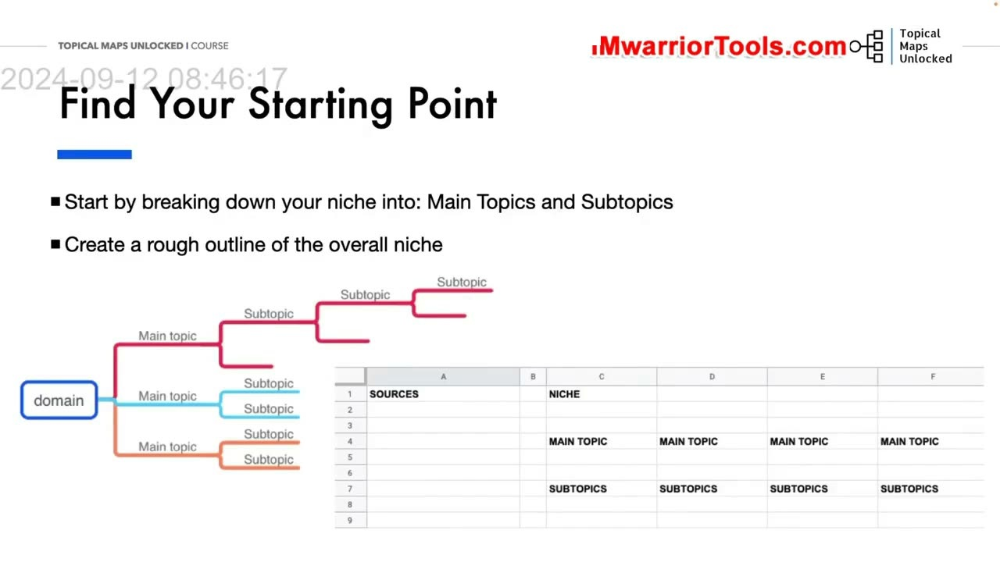
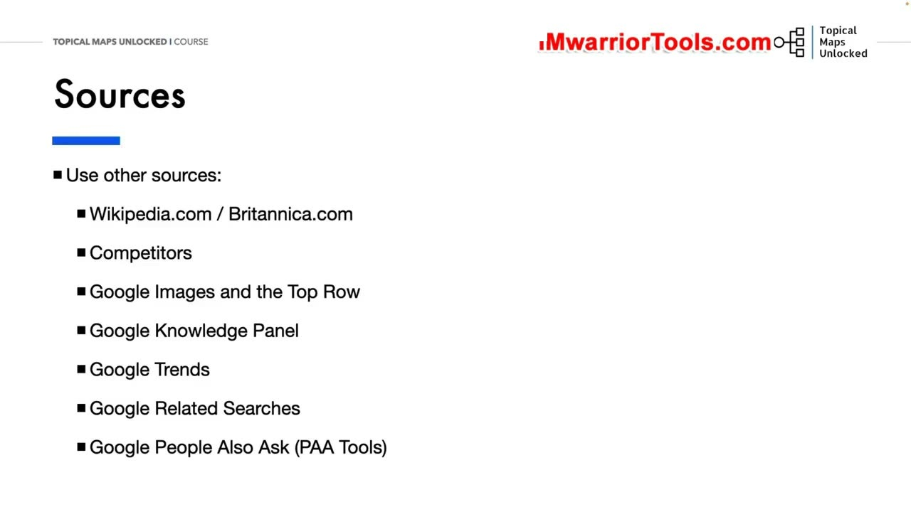
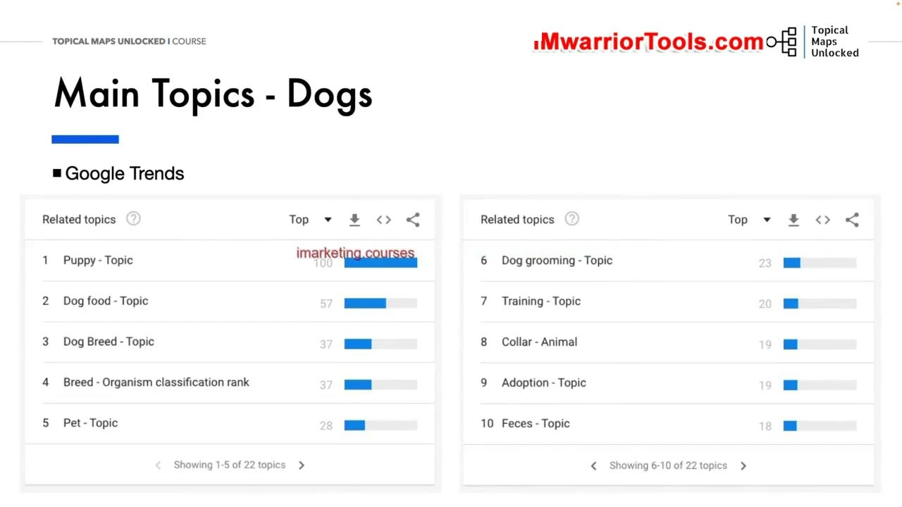
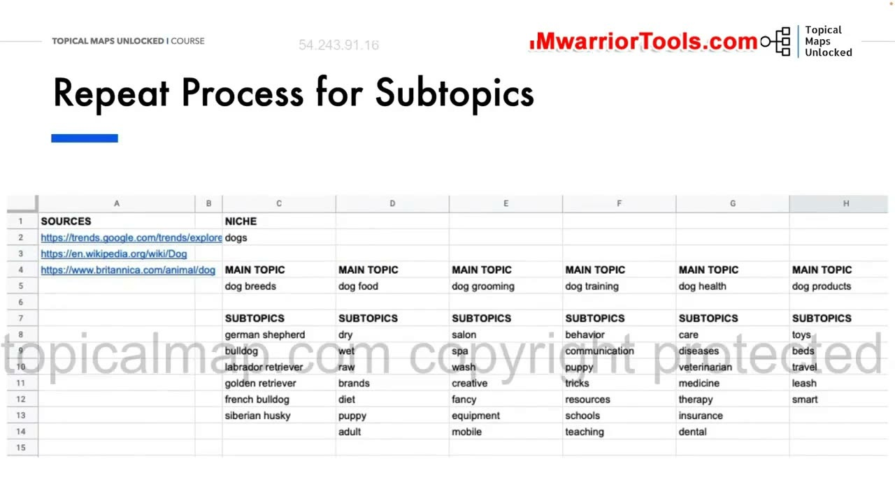

Breaking Down the Niche Main Topics and Subtopics
1. Phương pháp phân rã ngách: Khởi đầu từ thực thể cốt lõi đến các chủ đề chính
Trong bài học thực hành này, Yoyao trực tiếp cầm tay chỉ việc hướng dẫn từng bước cách phân rã ngách Loài chó (DOGS) thành một hệ thống phân cấp hoàn chỉnh trên bảng tính. Mục tiêu tối thượng của giai đoạn này là xác định được toàn bộ các nhánh chủ đề chính (Main Topics - Level 1) và sau đó điền đầy các nhánh chủ đề phụ (Subtopics - Levels 2-4) tương ứng.
Bước đầu tiên là tìm kiếm trên Google để xác định các thực thể và chủ đề trụ cột lớn nhất trong ngành. Khi tìm kiếm từ khóa hạt giống dog, Google lập tức nhận diện và hiển thị một thực thể chủ đề khổng lồ đầu tiên: Dog Breeds (Các giống chó). Đây chính là một thực thể cốt lõi không thể thiếu trên bất kỳ trang web chuyên sâu nào về thú cưng.
Việc phân rã có phương pháp giúp bạn biến một chủ đề khổng lồ thành những phần nhỏ có thể quản lý và sản xuất nội dung một cách có hệ thống.

2. Khai thác 6 nguồn dữ liệu uy tín để tìm kiếm chủ đề cốt lõi
Để không bỏ sót bất kỳ chủ đề quan trọng nào trong ngách, Yoyao chia sẻ 6 nguồn dữ liệu tham chiếu thực chiến tuyệt vời nhất:
- Wikipedia và Bách khoa toàn thư Britannica (Britannica.com): Đây là các nguồn bách khoa toàn thư chứa cấu trúc phân loại thực thể và danh mục khoa học chuẩn xác nhất thế giới.
- Competitors (Website đối thủ đầu ngành): Khám phá cách các trang web lớn đã thành công tổ chức thanh menu điều hướng và phân loại các chuyên mục nội dung ra sao.
- Google Images & Top Filter Row: Hàng thanh lọc hình ảnh phía trên cùng của Google Images luôn hiển thị các thuộc tính thực thể được người dùng tìm kiếm nhiều nhất.
- Google Knowledge Panel (Bảng tri thức): Hiển thị các thuộc tính phân loại khoa học của thực thể như phân họ, tuổi thọ, tính cách và nguồn gốc.
- Google Trends (Chủ đề liên quan - Related Topics): Giúp tìm ra các chủ đề đang có xu hướng tăng trưởng tìm kiếm cao nhất trong thời gian thực.
- Google People Also Ask (PAA) & Related Searches: Các câu hỏi và truy vấn liên quan phản ánh trực tiếp hành vi tìm kiếm và thắc mắc phổ biến nhất của độc giả.

3. Sử dụng Google Trends để xác định các Main Topics chuẩn xác
Khi nhập từ khóa dog vào Google Trends và cuộn xuống mục Related Topics (Chủ đề liên quan) ở chế độ xem Top (Hàng đầu), thuật toán của Google cung cấp ngay cho bạn danh sách các chủ đề lớn nhất mà công chúng quan tâm:
Dog Breed(Giống chó)Dog Food(Thức ăn dinh dưỡng cho chó)Puppy(Chăm sóc chó con)Dog Grooming(Tỉa lông, tắm rửa và chăm sóc vệ sinh)Dog Training(Huấn luyện kỷ luật và hành vi)Dog Health & Disease(Sức khỏe thú y và phòng ngừa bệnh tật)Dog Products & Supplies(Phụ kiện, đồ chơi và chuồng trại cho chó)
Những chủ đề này chính là các Main Topics hoàn hảo mang tính nền móng để bạn đưa thẳng vào hàng đầu tiên trên bảng tính Topical Map của mình.

4. Điền dữ liệu vào bảng tính và lặp lại quy trình cho các Subtopics
Sau khi đã có trong tay danh sách Main Topics, Yoyao mở mẫu bảng tính Topical Map Spreadsheet và điền các đề mục này vào các cột chính:
- Cột 1:
Dog Breeds - Cột 2:
Dog Food - Cột 3:
Dog Grooming - Cột 4:
Dog Training - Cột 5:
Dog Health - Cột 6:
Dog Products
Tiếp theo, bạn lặp lại chính xác quy trình tìm kiếm trên cho từng Main Topic để khai thác danh sách các Subtopics con. Ví dụ, dưới nhánh Dog Breeds, bạn điền danh sách các giống chó cụ thể: German Shepherd, Bulldog, Labrador Retriever, Golden Retriever, French Bulldog, Siberian Husky... Dưới nhánh Dog Food, bạn điền: Dry food, Wet food, Raw diet, Senior dog food... Cứ như vậy, cấu trúc phân cấp của toàn bộ website được hình thành ngăn nắp từng bước một.
Việc xây dựng bản đồ từ sớm giúp bạn kiểm soát được toàn bộ bức tranh tổng thể, bảo đảm không bị bỏ sót các ngách nội dung quan trọng và tránh việc tạo ra những bài viết rời rạc, không gắn kết với nhau.

Nguồn và đối chiếu
- Topical Maps Unlocked 2.0 · 02-Breaking Down the Niche Main Topics and Subtopics (Video bài học chính).
- Đối chiếu ngữ nghĩa với bản tiếng Anh: Bản Tiếng Anh/05-Topical and Keyword Research/02-Breaking Down the Niche Main Topics and Subtopics.mp4.